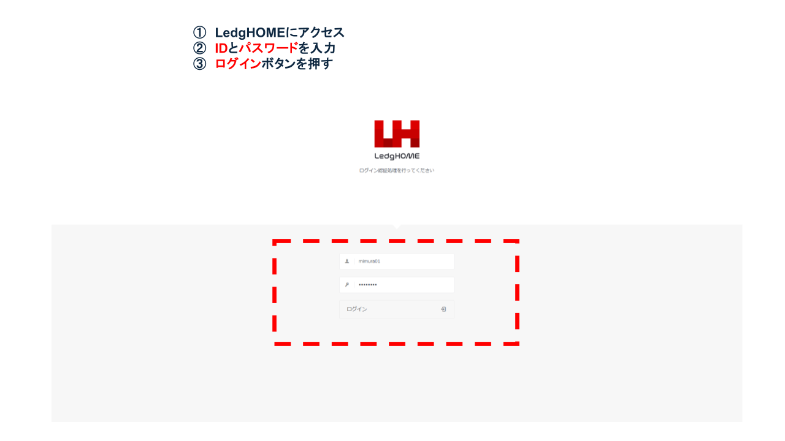
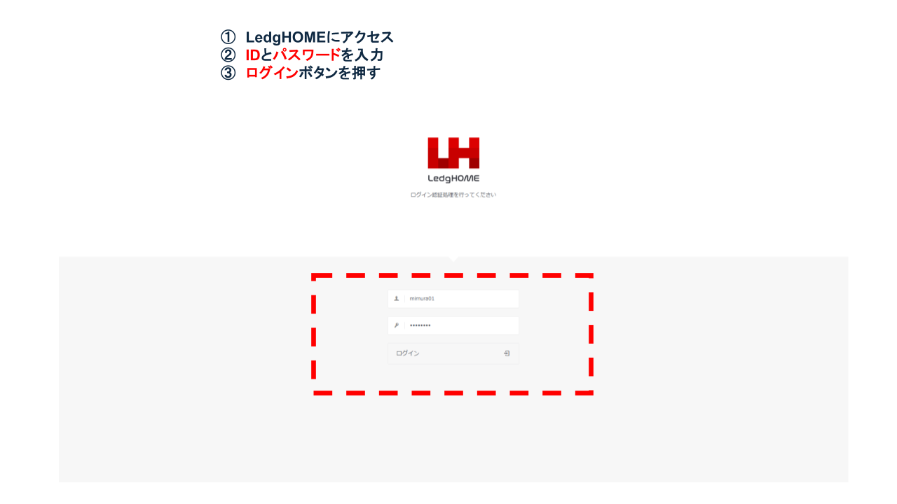
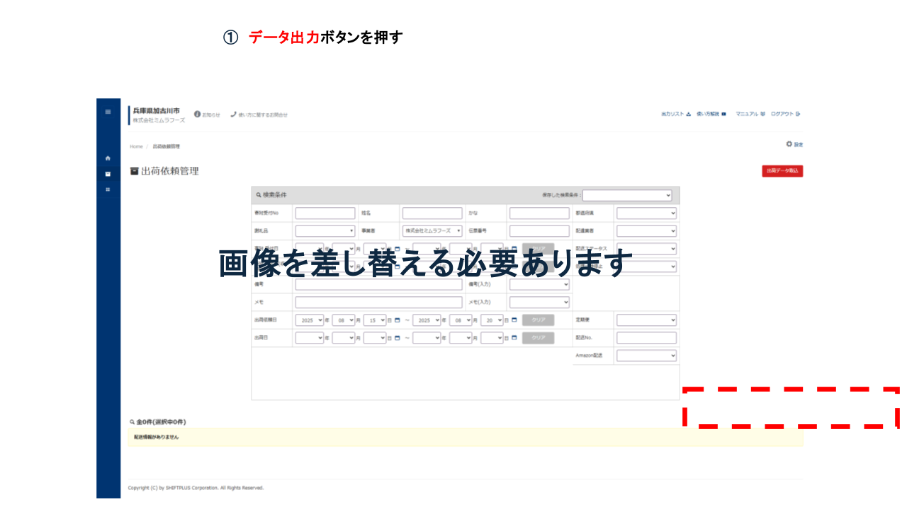

1. LedgHOMEにログイン
LedgHOMEのログイン画面にアクセスし、ログインID・パスワードを入力してログインボタンを押す。
加古川市ふるさと納税サポート室からの出荷依頼情報を、返礼品_発注状況_確認システム（LedgHOME）から正確・タイムリーに取得し、後続の受注データの受注処理システムへの取込み・出荷指示の作成につなげる。取得精度は後続の作業に直結するため、重要度は高い。
※ログイン情報は定期的に変更されるため、最新版はIT管理者に確認してください。
| 項目 | 内容 |
|---|---|
| ログインID | mimura01 |
| パスワード | f5TahCkg |
| ログインURL | https://kakogawa.lhcloud.jp/login.php |
LedgHOMEのログイン画面にアクセスし、ログインID・パスワードを入力してログインボタンを押す。
出荷依頼管理画面の「出荷依頼日」項目の始点と終点の範囲を指定し、検索ボタンを押す。
| 項目名 | 必須 | 入力例 | 備考 |
|---|---|---|---|
| 期間（開始） | ○ | 2025-08-01 | 前回データ出力の当日から |
| 期間（終了） | ○ | 2025-08-15 | 当該データ出力の前日の日付 |
検索結果の一覧の右サイドにある「データ出力」ボタンを押して出荷依頼データをダウンロードする。
データ出力でダウンロードしたファイルを共有環境に保管する。
orders_YYYYMMDD_HHMM.csv を推奨（例：orders_20250815_0900.csv）。| 作業項目 | R（実行） | A（責任） | C（相談） | I（共有） |
|---|---|---|---|---|
| 受注データの取得 | 受注・出荷指示担当 | 受注管理責任者 | 在庫確認担当 | 受注・出荷指示担当（LOGILESS） |